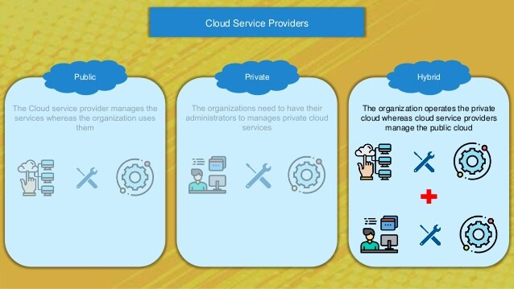

In summary, public clouds promote standardization, preserves capital investigation, offer application flexibility. The private clouds attempt to achieve customization and offer higher efficiency, resiliency, security, and privacy. The hybrid clouds operate in a middle way with compromises.
Cloud infrastructure vs. a cloud architecture
Cloud architecture is how individual technologies are integrated to create cloud computing environments. It’s the way all the components that makeup clouds—hardware, virtual resources, networks, operating systems, middleware, automation, management, containers, and more—are connected. If cloud infrastructure is the tool you need to build a cloud, then cloud architecture is the blueprint for how you’ll build it.
Think of it like building a house. You need materials and a blueprint to construct a house. Without a blueprint, you have nothing more than resources—wood, concrete, and nails. With a blueprint, those materials can be strategically combined to create the foundation, roof, and walls that make a house.
Cloud Reference Model
Six actors in the reference model
1. Cloud Consumer : A cloud consumer is an organization (or a human) that has a formal contract or arrangement with a cloud provider to use IT resources made available by the cloud provider. Specifically, the cloud consumer uses a cloud service consumer to access a cloud service (Figure 1).

Figure 1 – A cloud consumer (Organization A) interacts with a cloud service from a cloud provider (that owns Cloud A). Within Organization A, the cloud service consumer is being used to access the cloud service.
2. Cloud Provider [ Creates the service] : A cloud provider is a company that delivers cloud computing-based services and solutions to businesses and/or individuals. This service organization may provide rented and provider-managed virtual hardware, software, infrastructure and other related services.
3. Cloud Auditor : A cloud auditor is a party that can perform an independent examination of cloud service controls with the intent to express an opinion thereon. Audits are performed to verify conformance to standards through a review of objective evidence. A cloud auditor can evaluate the services provided by a cloud provider in terms of security controls, privacy impact, performance, etc.
4. Cloud Broker : Cloud Broker is an entity that manages the use, performance, and delivery of cloud services, and negotiates relationships between cloud providers and cloud consumers. As cloud computing evolves, the integration of cloud services may be too complex for cloud consumers to manage alone. Collaboration between two (provider and consumer).
According to NIST, several service areas can be supported by the cloud broker including:
5. Cloud Carrier : A cloud carrier acts as an intermediary that provides connectivity and transport of cloud services between cloud consumers and cloud providers. Cloud carriers provide access to consumers through networks, telecommunication, and other access devices. For example, cloud consumers can obtain cloud services through network access devices, such as computers, laptops, mobile phones, mobile Internet devices (MIDs), TCP IP protocol etc.